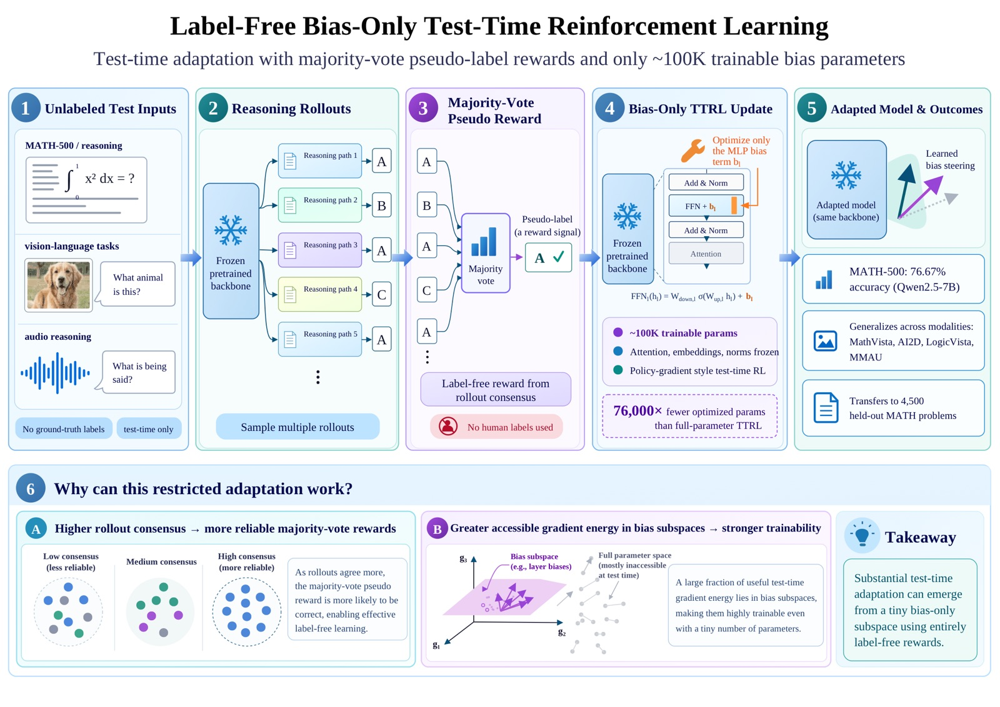
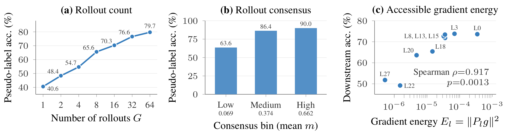

Abstract
Test-time reinforcement learning (TTRL) enables models to improve their reasoning without relying on labeled training data, but existing approaches typically optimize a large fraction of the model parameters. This raises a natural question: can effective test-time adaptation emerge when both the reward signal and the optimization space are severely restricted? We answer this question with label-free bias-only TTRL, which uses majority-vote pseudo-labels as rewards and optimizes only ~100K bias parameters while keeping the pretrained backbone frozen. On MATH-500, our approach reaches 76.67% accuracy with Qwen2.5-7B, slightly exceeding our own labeled bias-steering reproduction while optimizing 76,000× fewer parameters than full-parameter TTRL. The same training procedure improves performance across vision-language and audio reasoning tasks, including MathVista, AI2D, LogicVista, and MMAU. We further show that the learned steering vectors transfer to 4,500 held-out MATH problems, indicating that the adaptation is not limited to the problems used during test-time optimization. Finally, we analyze why this highly restricted adaptation can work, showing that majority-vote reliability improves with rollout consensus and that bias subspaces with greater accessible gradient energy exhibit stronger downstream trainability.
Method
Label-free bias-only TTRL sits at the intersection of two restrictions applied together for the first time: it removes the need for labeled rewards, the way TTRL does, while also restricting optimization to a tiny per-layer additive bias subspace, the way bias-only steering does — rather than requiring either a labeled reward or a full-parameter update. For each unlabeled problem, the frozen backbone generates multiple rollouts; the majority-vote answer across rollouts defines a pseudo-label reward, and GRPO updates only a ~100K-parameter set of per-layer bias vectors against it — the backbone itself never receives a gradient.

| Optimization space | ~100K additive bias parameters per model (one vector per MLP layer, all 28 layers), backbone frozen. |
| Reward | Majority-vote pseudo-labels from the model's own rollouts — no ground-truth labels. |
| Modalities | Text (MATH-500), vision-language (MathVista, AI2D, LogicVista), audio (MMAU). |
| Models | Qwen2.5-7B / Qwen2.5-Math-7B, Qwen2.5-VL-7B-Instruct, Qwen2.5-Omni-7B. |
Two theoretical results motivate why a signal this restricted can still work — one about the reward, one about the subspace:
Proposition 1 — Pseudo-label reliability grows with rollout count
If the correct answer has positive probability margin over the next-best answer, the probability that the majority-vote pseudo-label is wrong decreases exponentially in the number of rollouts G. Empirically, pseudo-label accuracy on MATH-500 rises monotonically with both G and the strength of rollout consensus.
Theorem 1 — Trainability is governed by accessible gradient energy, not subspace size
For a restricted-subspace gradient update, the guaranteed local improvement in the RL objective is bounded below by the accessible gradient energy — the squared norm of the full gradient projected into the trainable subspace — rather than by the subspace's dimensionality. Equal-sized subspaces need not be equally trainable.

Key Findings
-
1. Competitive with Far More Expensive Alternatives
On MATH-500, label-free bias-only TTRL reaches 76.67% / 79.50% accuracy on Qwen2.5-7B / Qwen2.5-Math-7B, while training 76,000× fewer parameters than full-parameter TTRL and using a single GH200 GPU instead of four under FSDP — a 16–18.5× reduction in GPU-hours on top of the parameter reduction. -
2. Removing Labels Costs Essentially Nothing
Pseudo-label bias-only TTRL slightly exceeds its own labeled-reward counterpart on both models (76.67% vs. 75.47% on Qwen2.5-7B; 79.50% vs. 77.27% on Qwen2.5-Math-7B) — the label source costs full fine-tuning far more (up to 10.9 points) than it costs the bias-only subspace. -
3. Not Uniformly Beaten by Larger Trainable Subspaces
Under a matched ~100K-parameter budget, bias-only TTRL beats LoRA (exact-match, r=1) and LoRA r=16 on all six benchmarks, and LoRA r=64 (5× more parameters) on five of six. Only full fine-tuning of the entire 7.6B-parameter model beats it on more than one benchmark, and even then by just 0.3–4.3 points under pseudo-labels. -
4. Transfers Beyond the Training Problems
Freezing the step-200 checkpoints trained on MATH-500 and evaluating them — with no further training — on 4,500 verified-disjoint MATH problems improves Qwen2.5-7B from 46.3% to 70.9% (+24.6) and Qwen2.5-Math-7B from 52.5% to 75.4% (+22.9). -
5. Generalizes Across Modalities with One Recipe
The same training procedure, only the prompt and grading function changed, improves MathVista, AI2D, LogicVista, and MMAU over their untrained baselines — and over self-consistency (majority voting with no training) on every one of the six benchmarks. -
6. Equal Parameter Count ≠ Equal Trainability
Across nine single-layer bias subspaces of identical size, accessible gradient energy correlates with downstream accuracy (Spearman ρ=0.917, exact two-tailed permutation test, p=0.0013) — which bias subspace you pick matters, not just how large it is.
Main Results
The same ~100K-parameter training procedure is used across all tasks and modalities, with only the task-specific prompt and reward/grading function adapted to each benchmark.
| Model | Benchmark | Baseline | Bias-only TTRL (ours) |
|---|---|---|---|
| Qwen2.5-Math-7B | MATH-500 | 56.0 | 79.50 ± 0.70 |
| Qwen2.5-7B | MATH-500 | 45.9 | 76.67 ± 1.57 |
| Qwen2.5-VL-7B-Instruct | AI2D | 73.58 | 78.29 ± 0.03 |
| Qwen2.5-VL-7B-Instruct | LogicVista | 37.50 | 43.38 ± 1.01 |
| Qwen2.5-VL-7B-Instruct | MathVista | 61.60 | 65.40 ± 1.77 |
| Qwen2.5-Omni-7B | MMAU | 57.40 | 60.87 ± 0.37 |
Mean ± standard deviation over 3 independent training seeds. Full comparisons against self-consistency, LoRA (r=1 exact-match, r=16, r=64), and full-parameter fine-tuning are in the paper (Table 1).
Held-out transfer: bias vectors trained only on MATH-500, frozen and applied without further optimization to 4,500 verified-disjoint MATH problems.
| Model | Unadapted | Transferred bias | Δ |
|---|---|---|---|
| Qwen2.5-7B | 46.3 | 70.9 | +24.6 |
| Qwen2.5-Math-7B | 52.5 | 75.4 | +22.9 |
Training Recipe
All training and evaluation scripts, organized per benchmark, share the same recipe:
python src/train_ttrl_steer.py \
--model_id Qwen/Qwen2.5-Math-7B \
--dataset math --num_steps 300 --G 64 --lr 5e-4 \
--use_vllm --output_dir outputs/math500_math7bSee the repository README for the full set of launch commands across all five benchmarks. Trained bias vectors are on Hugging Face, one repo per benchmark and base model, gathered in the Label-Free Bias-Only Steering collection.
Resources
arXiv Preprint
Read the full paper on label-free bias-only test-time reinforcement learning.
GitHub Repository
Training and evaluation scripts for every benchmark, with the launch commands for each recipe.
Hugging Face Collection
Trained bias steering vectors, one repository per benchmark and base model.
BibTeX
@article{vakada2026labelfree,
title = {Label-Free Steering: Compressing Test-Time Reinforcement Learning into Bias-Only Subspaces},
author = {Vakada, Naveen and Li, Mingyuan and Ji, Shaoxiong},
journal = {arXiv preprint arXiv:2609.18587},
eprint = {2609.18587},
archivePrefix = {arXiv},
primaryClass = {cs.CL},
url = {https://arxiv.org/abs/2609.18587},
year = {2026}
}Funding
HAIF is co-funded by the European Union's Horizon Europe research and innovation programme's Marie Skłodowska-Curie Action. The authors also acknowledge CSC — IT Center for Science, Finland, for computational resources, including access to the Roihu and LUMI supercomputers.